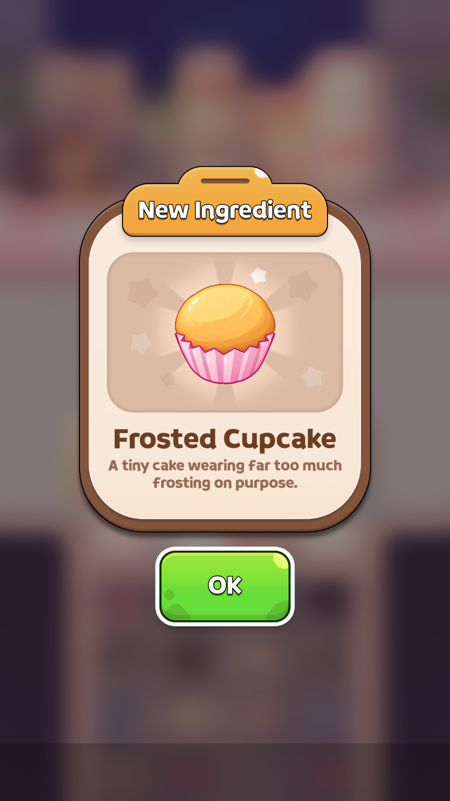
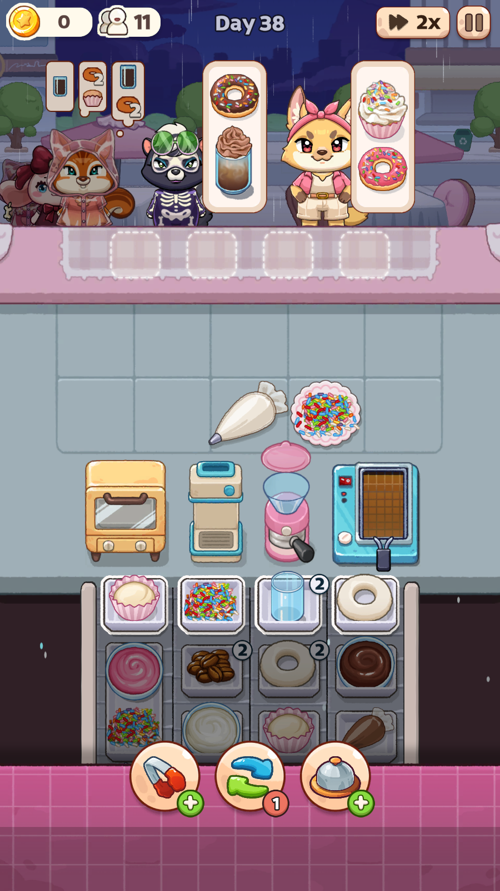

Món đôi / bó món (Food Bundle, nhóm `$` thứ nhất)
Mô tả
- 2–3 ô nguyên liệu kề nhau được gộp thành một khối (bó) rộng/cao nhiều ô: chạm một lần lấy cả khối, các món bay ra lần lượt.
- Tên popup là "Food Bundle" ("These foods move and are picked together as one block."); tên nội bộ 1.11 trong brief là "DupleFood" (tên prefab
UIPopup-IntroMechanic-DupleFood), trong code 1.15 là nhóm Combined (QueueGroupKind0, section$thứ nhất). - 228/1 030 level APK (236/1 090 server live 16/11) có bó: 995 bó, 746 bó 2 ô và 249 bó 3 ô; 768 bó dọc, 227 bó ngang.
- Burger: level 34 là level đầu (coffee L8, sandwich L7); Playtest 16/11 (Day 13–20) chưa gặp bó.
Thiết kế chi tiết
Tóm tắt thiết kế
- Code Bó chỉ hợp lệ nếu là hình chữ nhật đặc ≥ 2 ô (
StackModeService.MergeBlock); nhóm sai bị bỏ mà không báo lỗi. - Code 1.15 thêm
ConveyorItemShapevà nhả tuần tự (PlayReleaseSequence, 0,1 s/món): bó trông như một vật lớn nhưng món ra từng cái một. - APK 228/1 030 level (22%); bó dọc (768) nhiều hơn bó ngang (227); không có bó lớn hơn 3 ô.
- Live 16/11 Server live: 236/1 090 level; bento tăng từ 3 lên 18, pizza giảm từ 17 xuống 4.
- Playtest Bản 1.11 (coffee L8): một chạm lấy cả bó kem + sprinkles. Bản 1.15 (Day 13–20) chưa gặp bó.
- Nhận định Bó làm "lấy 2–3 món một lúc" vừa là thưởng (nhanh) vừa là rủi ro (cần đủ ô lưới), nên dùng được cả như lối tắt lẫn bẫy.
Luồng người chơi từng bước
- Học cơ chếGiao diện Code"Food Bundle – These foods move and are picked together as one block." / "Got it!".

Popup giới thiệu "Food Bundle" / "Got it!" ở coffee L8 (bản 1.11, 26/10) - Chạm khốiNgười chơi CodeMột chạm lấy cả khối nếu đủ chỗ.
- Món bay ra lần lượtHệ thống Code
PlayReleaseSequencenhả từng món.
Coffee L8 sau khi lấy bó: túi kem và đĩa sprinkles lấy cùng một chạm nằm trên lưới (bản 1.11, 26/10)


Số level dùng bó theo map
| Map | APK: số level (level đầu) | Server live 16/11: số level (level đầu) |
|---|---|---|
| burger | 15 (L34) | 14 (L34) |
| coffee | 21 (L8) | 20 (L8) |
| sushi | 19 (L10) | 19 (L10) |
| pasta | 31 (L4) | 31 (L4) |
| icecream | 25 (L10) | 23 (L10) |
| sandwich | 20 (L7) | 20 (L7) |
| tteokbokki | 28 (L7) | 27 (L7) |
| seafood | 26 (L9) | 26 (L9) |
| dimsum | 23 (L9) | 24 (L9) |
| pizza | 17 (L13) | 4 (L13) |
| bento | 3 (L13) | 18 (L13) |
| croissant | - | 4 (L1) |
| tacos | - | 6 (L10) |
| Tổng | 228 / 1 030 level chơi được | 236 / 1 090 level chơi được |
Nguồn: Data/levels/_stats.json (APK), Docs/LEVEL_DATA.md (server).
Hình dạng bó (APK, 995 bó)
| Hình (cột × hàng) | Số bó |
|---|---|
| 1×2 | 544 |
| 1×3 | 224 |
| 2×1 | 202 |
| 3×1 | 25 |
Nguồn Data/levels/*/L*.json.
Mã hoá trong chuỗi level
| Thành phần | Cú pháp | Ghi chú |
|---|---|---|
| Section | cột$Combined$Linked | phần thứ hai = Combined |
| Nhóm | x-y,x-y;... | ô là cột-hàng; hình chữ nhật đặc ≥ 2 ô |
| Ví dụ coffee L8 (chuỗi thô) | $0-1,0-2;1-0,2-0;2-4,2-5;... | 0-1,0-2 = bó dọc 1×2 ở cột 0, hàng 1–2; 1-0,2-0 = bó ngang 2×1 ở hàng 0 |
Cú pháp theo Tools/data/fp_level_syntax.py.
Vận dụng cho game khác
- Gộp vật phẩm thành khối lớn là cách tạo nhịp "lấy nhiều" mà không thêm nút; kiểm tra tài nguyên đích đủ chỗ trước khi cho lấy.
- Giữ hình dạng đơn giản (chỉ 1×2, 1×3, 2×1, 3×1) giúp người chơi đọc ngay mà vẫn đa dạng.
Bảng tổng hợp mọi tính năng đã làm chi tiết: FoodiePop_ThietKeChiTiet.xlsx.
Mở khóa & điểm vào
Bật khi chuỗi hàng đợi có section $ thứ nhất (Combined; IngredientQueueInLevel.IsHaveCombinedSlotGroups). Popup intro một lần (PlayerPrefs IntroCombinedSlot, UIInLevelCakeOrder.IsDoneIntroCombinedSlotMechanics); khoá New Feature Slot-Combined.
Điểm vào:
- Đầu level đầu tiên có bó: popup
UIPopup-IntroMechanic-DupleFood("Food Bundle" / "Got it!") - Màn thắng liền trước: thanh "New Feature" và popup (khoá
Slot-Combined) - Băng chuyền: khối món lớn chiếm 2–3 ô cột hoặc hàng
Cách hoạt động
- Chuỗi hàng đợi: section
$thứ nhất liệt kê nhómx-y,x-y;...(cột-hàng). Các nhóm là Combined (QueueGroupKind0). StackModeService.ApplySlotGroupsgọiStackModeService.MergeBlockcho từng nhóm: nhóm có < 2 ô bị bỏ; các ô phải tạo thành hình chữ nhật đặc (diện tích hộp bao = số ô), nếu không nhóm bị bỏ.MergeBlockgộp các ô thành mộtConveyorBundlevớiWidth×Height,Itemschứa mọi món của khối.ConveyorItemShape.Apply(width, height, cellStep)kéo khung hiển thị khối cho vừa W×H;IngredientSpawnerControllerdùngshapeItemPrefabvàmaxBlockSize(3×3).- Người chơi chạm khối:
ConveyorPickup.Allows+HasRoomFor(cần đủ chỗ cho mọi bản sao của cả khối) →TapReleasetách món ra. IngredientConveyorItem.PlayReleaseSequencenhả từng món một (releaseStepInterval0,1 s) bay tới trạm / lưới;ConveyorBundle.SpendCopytrừ từng bản sao.- Khối biến mất, các cột dồn lên theo
ConveyorGrid.Advance.
Ảnh chụp
Bấm ảnh để phóng to, dùng phím ← → để chuyển ảnh. Nhãn màu cho biết nguồn bằng chứng của ảnh.
Số liệu chính
| Chỉ số | Giá trị | Nguồn |
|---|---|---|
| Level dùng bó (APK) | 228 / 1 030 | Data/levels/_stats.json (queue.Combined) |
| Level dùng bó (server live 16/11) | 236 / 1 090 | Docs/LEVEL_DATA.md |
| Số bó (APK) | 995 (2 ô: 746; 3 ô: 249) | Data/levels/* |
| Bó mỗi level (level có bó) | trung bình 4.4 / tối đa 26 | Data/levels/* |
| Level đầu (burger / coffee / sandwich) | L34 / L8 / L7 | Data/levels/_stats.json |
Use case (9)
Bấm vào từng use case để mở. Mở/đóng tất cả
UC-01 Khối bó xuất hiện
Các bước- Parse section Combined
MergeBlockkiểm tra hình chữ nhật- Dựng bundle Width×Height
| Actor | System |
|---|---|
| Trigger | Level tải xong |
| Điều kiện | Level có section Combined |
| Kết quả | Khối chiếm nhiều ô, kéo cả ô lân cận |
| Quy tắc / số liệu | Bó 2 ô: 746, 3 ô: 249 (APK); hình (rộng×cao): 1×2 544, 1×3 224, 2×1 202, 3×1 25; trung bình 4.4 bó / level, tối đa 26 |
| Evidence | StackModeService.MergeBlock |
UC-02 Nhóm không hợp lệ bị bỏ
Các bướcMergeBlockthoát sớm
| Actor | System |
|---|---|
| Trigger | Ô trong nhóm không tạo hình chữ nhật hoặc < 2 ô |
| Điều kiện | Nhóm sai hình |
| Kết quả | Các ô giữ nguyên là ô riêng |
| Quy tắc / số liệu | Dữ liệu APK không có nhóm không hợp lệ (mọi bó là 1×2, 1×3, 2×1, 3×1) |
| Evidence | StackModeService.ApplySlotGroups |
UC-03 Chạm khối bó
Các bướcConveyorPickup.Allows→HasRoomForkiểm tra chỗ cho mọi bản saoTapReleasebắt đầu nhả
| Actor | Player |
|---|---|
| Trigger | Chạm khối ở hàng 0 |
| Điều kiện | Khối ở hàng 0 |
| Kết quả | Cả khối được lấy bằng 1 chạm |
| Quy tắc / số liệu | Cần đủ chỗ cho cả khối; thiếu chỗ thì bị từ chối như ô thường (nháy lưới) |
| Evidence | ConveyorPickup.TapRelease |
UC-04 Nhả từng món
Các bướcPlayReleaseSequencenhả từng bản sao cách 0,1 sSpendCopygiảm số bản saospawnOnetạo món ở trạm / lưới
| Actor | Player |
|---|---|
| Trigger | Sau chạm hợp lệ |
| Điều kiện | Đã chạm hợp lệ |
| Kết quả | Các món bay ra lần lượt |
| Quy tắc / số liệu | Bản 1.15 đổi sang nhả tuần tự (1.11 không có PlayReleaseSequence) |
| Evidence | IngredientConveyorItem.PlayReleaseSequence |
UC-05 Khối trong chuỗi Linked hoặc ô băng
Các bướcIsChainFrozenvàIsReadyáp dụng cho cả khối
| Actor | Player |
|---|---|
| Trigger | Khối là thành viên chuỗi / chứa ô băng |
| Kết quả | Khối chỉ lấy khi chuỗi sẵn sàng và không băng |
| Quy tắc / số liệu | Chưa đếm tổ hợp trong dữ liệu |
| Evidence | IngredientConveyorItem.IsChainFrozen |
UC-06 Tongs chọn khối bó
Các bướcIsPickAnyCandidatekiểm tra hàng ≤pickAnyRowsCollectBatchgom khối
| Actor | Player |
|---|---|
| Trigger | Dùng Tongs |
| Điều kiện | Có Tongs |
| Kết quả | Lấy trọn khối nếu đủ chỗ |
| Quy tắc / số liệu | Chưa xác minh Tongs có tách từng phần của khối hay không |
| Evidence | ConveyorPickup.IsPickAnyCandidate |
UC-07 Popup giới thiệu ở đầu level
Các bước- Sau Grid, Slot và Linked,
TryShowIntroCombinedSlotMechanicschạy - Mở
UIPopup-IntroMechanic-DupleFood Variant - "Got it!" →
SetDoneIntroCombinedSlotMechanics
| Actor | Player |
|---|---|
| Trigger | Level có Combined, chưa có cờ IntroCombinedSlot |
| Điều kiện | Chưa có cờ |
| Kết quả | Cờ = 1 |
| Quy tắc / số liệu | Điều kiện IsHaveCombinedSlotGroups |
| Evidence | UIInLevelCakeOrder.SetDoneIntroCombinedSlotMechanics |
UC-08 Popup "New Feature" ở màn thắng liền trước
Các bướcUIPopupNewFeather.GetNewObstacleKeys→Slot-Combined
| Actor | Player |
|---|---|
| Trigger | Thắng level N, level N+1 lần đầu có bó |
| Điều kiện | Level kế có cơ chế mới |
| Kết quả | Báo trước cơ chế |
| Quy tắc / số liệu | Khoá hằng CombinedSlotObstacleKey = "Slot-Combined" |
| Evidence | UIPopupNewFeather.GetNewObstacleKeys |
UC-09 Bó sinh ngẫu nhiên (hàng đợi không thiết kế)
Các bước- Theo
crossChance0,2 vàminBundleSize1 –maxBundleSize2 - Chiều rộng tối đa
MaxCrossWidth(roomToTheRight)
| Actor | Player |
|---|---|
| Trigger | Hàng đợi do ConveyorBundleBuilder.BuildColumn sinh |
| Điều kiện | Chế độ sinh ngẫu nhiên |
| Kết quả | Khối rộng nhiều cột ngẫu nhiên |
| Quy tắc / số liệu | Cấu hình scene giống nhau ở 11 map; không thấy dùng cho level thường (level dùng hàng đợi thiết kế) |
| Evidence | ConveyorBundleBuilder.BuildColumn |
Cấu hình (8)
Gộp mọi nguồn: const trong code, giá trị mặc định trong APK, storage key, AB test, cờ server.
| Nguồn | Key | Kiểu | Giá trị | Ý nghĩa | Nơi định nghĩa |
|---|---|---|---|---|---|
| level string | queue section 1 (sau `$` thứ nhất) | groups | x-y,x-y;... (cột-hàng) | nhóm Combined (QueueGroupKind 0) | IngredientQueueTranslator.ParseGroups |
| Data/levels | Hình dạng bó (APK) | int | 1×2: 544, 1×3: 224, 2×1: 202, 3×1: 25 (rộng×cao) | chỉ có 4 hình, chiều dài tối đa 3 | Data/levels/* |
| asset | maxBlockSize (scene) | Vector2Int | (3, 3) ở cả 11 map | kích thước khối lớn nhất cho phép | FS*.unity (IngredientSpawnerController) |
| asset | minBundleSize / maxBundleSize / crossChance (scene) | int / float | 1 / 2 / 0,2 ở cả 11 map | tham số sinh bó ngẫu nhiên | FS*.unity |
| asset | releaseStepInterval (scene) | float | 0,1 s | khoảng cách giữa hai món khi nhả | FSBurger.unity |
| storage key | PlayerPrefs IntroCombinedSlot | int | 1 = đã xem | cờ intro | UIInLevelCakeOrder.GetKeyIsDoneIntroCombinedSlotMechanics |
| asset | UINewFeartherConfig["Slot-Combined"] | NewFeatherConfig | featherName "Food Bundle"; featherDesc "These foods move and are picked together as one block."; key food_bundle | nội dung popup New Feature | UINewFeatureConfigObstacle.asset |
| asset (UI_InGame en-GB) | Intro popup text | string | "Food Bundle" / "These foods move and are picked together as one block." / "Got it!" | popup UIPopup-IntroMechanic-DupleFood Variant | Map-common_assets/Prefabs/UI/InGame |
Backend / server
| Command | Chiều | Mục đích |
|---|---|---|
Remote Config map_config_<map>_lv_<n> / map_config_<map>_lv_all_override_default | server→client | Chuỗi level (khách ~ lưới ~ hàng đợi) mang token của cơ chế này; server live 16/11 ghi đè 1 090 level (xem Docs/LEVEL_DATA.md). Không có API riêng cho cơ chế. |
Giao diện (UI)
| Element | Class | Mục đích |
|---|---|---|
| Khối món lớn | AnhPD.FoodOrder.ConveyorItemShape | kéo khung theo Width×Height |
| Món trên băng chuyền | AnhPD.FoodOrder.IngredientConveyorItem | nhả tuần tự, ApplyShape |
| Popup giới thiệu | CakeOrder.InGame.UIPopupIntroNewMechanics | prefab DupleFood (Food Bundle) |
Storage keys
IntroCombinedSlot
Còn thiếu / chưa xác minh
- Tên "DupleFood" chỉ còn trong tên prefab (
UIPopup-IntroMechanic-DupleFood); không có lớp C# tên DupleFood trong 1.15, nên Combined = Food Bundle được suy từ prefab +IntroCombinedSlot+ApplySlotGroups. - RESULTS_LIVE gắn nhãn Mechanic-DuplicatedFood cho ảnh l15b_21 nhưng ảnh đó là chai mayo (decoy), không phải bó: Playtest 16/11 chưa gặp Combined (burger Combined đầu tiên ở L34).
- Tongs có tách từng phần khối hay không (
ConveyorBundle.PeelCell) chưa đọc. - Không thấy event analytics riêng cho cơ chế này.
Tính năng liên quan
Băng chuyền nguyên liệu (ConveyorGrid) Món liên kết (Linked Items, nhóm `$` thứ hai) Ô ẩn (Hidden Item, token #2) Ô đóng băng (Frozen Item, token #1:n) Giới thiệu tính năng mới (New Feature x/N) Định dạng level, độ khó & thống kê
Nguồn đã đọc
_analysis/code/decompiled/Assembly-CSharp/AnhPD.FoodOrder.StackModeService.c (ApplySlotGroups, MergeBlock)_analysis/code/stubs/Assembly-CSharp/AnhPD.FoodOrder.ConveyorBundle.cs_analysis/code/stubs/Assembly-CSharp/AnhPD.FoodOrder.ConveyorItemShape.csDocs/DIFF_111_115.md (ConveyorItemShape, PlayReleaseSequence mới)_rip/ExportedProject/Assets/_Production/Map-common_assets/Prefabs/UI/InGame/UIPopup-IntroMechanic-DupleFood Variant.prefabData/config/UINewFeartherConfig.jsonDocs/LEVEL_DATA.mdData/levels/*F:/0_Phuc/Clone/Pop/Docs/decode/GAMEPLAY.md (H23, gợi ý 1.11)